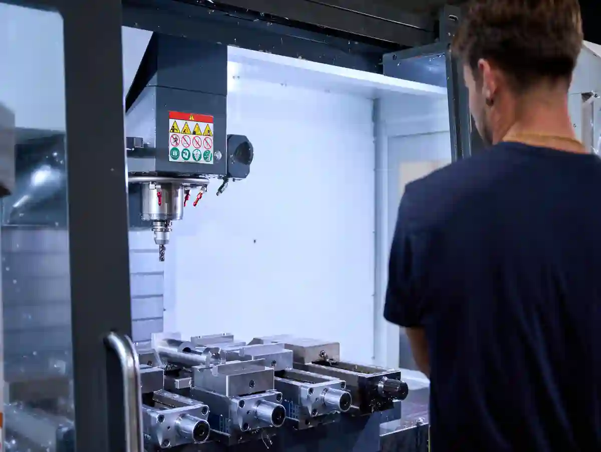
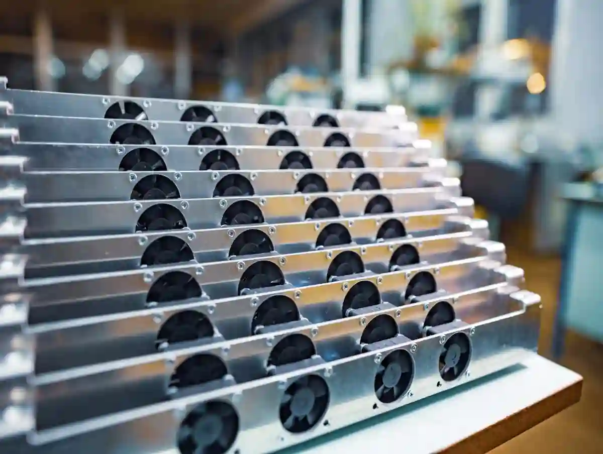
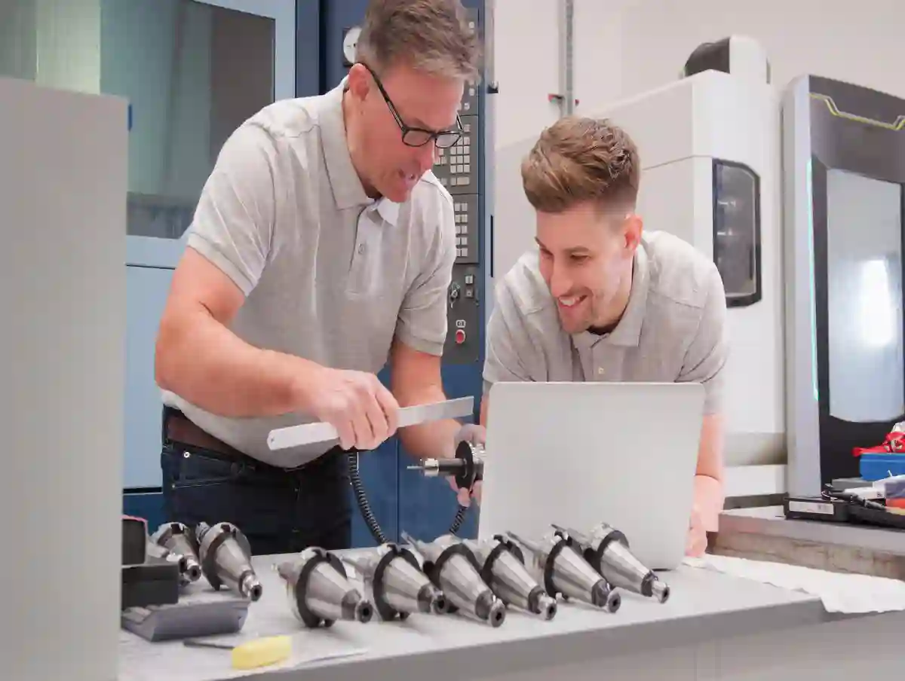
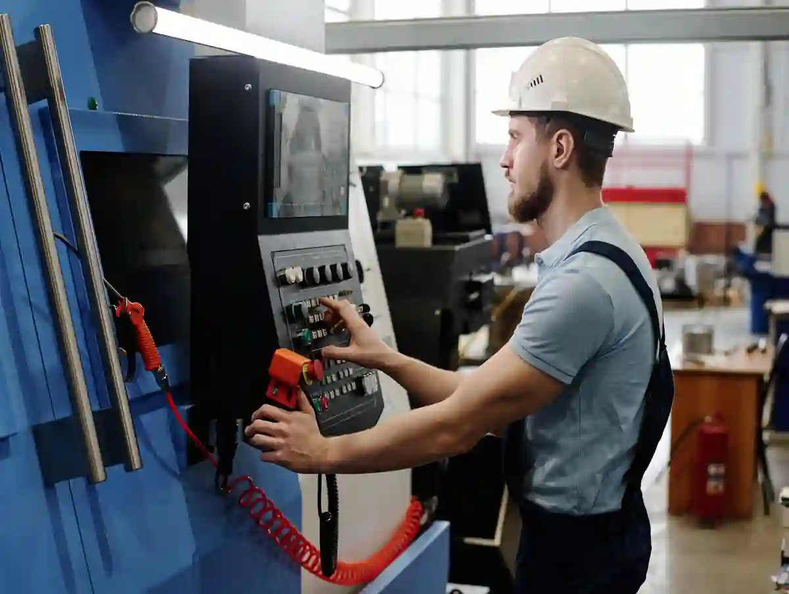
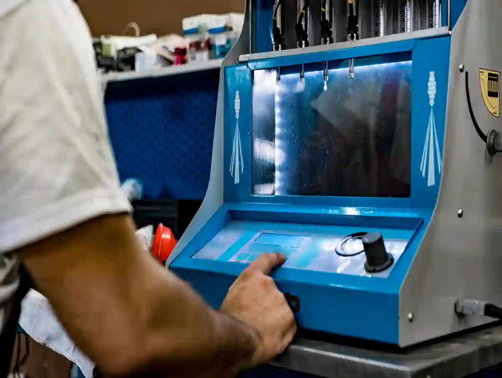

Özel Parça İmalatı ile Seri Üretime Geçiş Stratejileri
Özel parça imalatı ile seri üretim, tek bir prototipin çoğaltılması değildir. Doğru geçiş; tasarımın üretilebilirliğinin doğrulanması, pilot üretim süreci ile gerçek saha verisinin toplanması, seri üretim öncesi test adımlarının tamamlanması ve ardından kontrollü üretim ölçeklendirme yapılmasıyla mümkün olur. Bu yaklaşım, kalite sapmalarını, hurda maliyetini ve termin riskini düşürür.
AYMAKSAN’ın mevcut site yapısına bakıldığında bu konu, yalnızca blog düzeyinde değil; Prototip Üretim ve Ar-Ge Desteği, Özel Talaşlı İmalat, CNC Tornalama, CNC Frezeleme / Dik İşleme ve Makine Parkımız sayfalarıyla birlikte kümelenebilecek bir ana içerik olarak konumlanıyor. Özellikle sitede yer alan DAHLIH MCV-1450 dik işleme merkezi, Doosan / DN Solutions PUMA 280L CNC torna ve SB-20R otomatik torna gibi altyapılar; hem numune hem de tekrar eden üretim senaryolarını aynı operasyon zincirinde ele almaya uygun bir üretim zemini sunuyor.
Birçok firma prototip başarılı olduğunda seri üretime hazır olduğunu düşünür. Oysa gerçek hayatta prototipin çalışması ile üretimin sürdürülebilir olması aynı şey değildir. Bir parçanın tek sefer üretilmesi başka, aynı parçanın onlarca ya da yüzlerce kez aynı tolerans, aynı yüzey kalitesi ve aynı montaj davranışıyla üretilebilmesi bambaşka bir mühendislik problemidir. Bu nedenle prototipten seri üretime geçiş aşaması, tasarım ekibi ile üretim ekibinin ortak dil kurduğu kritik kırılma noktasıdır.
Özel parça tarafında geçiş stratejisi oluşturulurken ilk soru şudur: “Bu parça gerçekten seri üretime aday mı, yoksa kontrollü düşük adet üretim modeliyle mi daha verimli yönetilmeli?” Çünkü bazı parçalar yüksek varyasyon, sık revizyon, değişken müşteri şartnamesi veya montaj bağımlılığı nedeniyle tam ölçekli seri mantığa uygun değildir. Bu durumda amaç, maliyeti zorlayarak seriye geçmek değil; ölçek ekonomisini teknik gerçeklikle dengelemektir.
Buradaki temel prensip şudur: Seri üretime geçiş kararı satış beklentisine göre değil, proses kararlılığına göre verilmelidir. Ölçü dağılımı, fikstür güvenilirliği, takım ömrü, operatör bağımlılığı, malzeme dalgalanması ve kontrol planı oturmamışsa erken seri üretim kararı çoğu zaman sahada pahalı bir deneye dönüşür. Bu yüzden özel parça imalatı ile seri üretim modeli, önce kontrol edilebilir bir süreç olarak kurulmalı; kapasite artırımı daha sonra gelmelidir.
Özel Parça İmalatı ile Seri Üretim Neden Ayrı Bir Mühendislik Fazıdır?
Prototip Başarısı Neden Tek Başına Yeterli Değildir?
Prototip parça çoğu zaman fonksiyon doğrulama amacıyla üretilir. Yani asıl hedef, parçanın çalışıp çalışmadığını görmektir. Buna karşılık seri üretimde soru değişir: Bu parça her çevrimde aynı sonucu verecek mi? Eğer cevap belirsizse, prototipte elde edilen başarı ticari ölçekte korunamaz.
Tek parçada tolere edilen bazı sorunlar, seri üretimde hızla büyür. Örneğin operatör becerisine fazla bağlı bir bağlama yöntemi, numunede kabul edilebilir görünürken adet arttığında ölçü kaçmalarını artırabilir. Benzer şekilde kaba ve finish operasyonlar prototipte aynı kurulum içinde yönetilmiş olabilir; ancak seri akışta bu düzen çevrim süresi, takım ömrü ve yüzey davranışı açısından sürdürülemez hale gelebilir.
Bu yüzden özel parça imalatı ile seri üretim yaklaşımında prototip; “nihai çözüm” değil, “veri toplayan ilk gerçek deneme” olarak ele alınmalıdır. Parçanın fonksiyonu kadar, üretim yolu da test edilmelidir. Hangi operasyon önce yapılacak, hangi yüzey referans kabul edilecek, hangi tolerans proses içinde takip edilecek, hangi ölçü final kontrolde doğrulanacak gibi sorular prototip sonunda netleşmelidir. Bu geçişin proje, maliyet ve kalite boyutunu daha geniş çerçevede görmek için Özel Parça İmalatı Blog merkezindeki diğer teknik içeriklere de göz atabilirsiniz.

Numune, Pilot ve Ön Seri Arasındaki Fark Nedir?
Sahada en sık görülen karışıklıklardan biri, numune üretim ile pilot üretimin aynı şey sanılmasıdır. Numune üretim, çoğu zaman tasarımın ilk doğrulamasıdır. Pilot üretim süreci ise tasarımın değil, üretim sisteminin doğrulanmasıdır. Yani pilot aşama; makine, takım, bağlama, program, ölçüm planı ve iş akışının birlikte sınandığı seri öncesi prova alanıdır.
Ön seri üretim ise pilot aşamadan sonra gelir. Burada artık amaç, prosesin gerçek üretim koşullarına ne kadar yakın çalıştığını görmektir. Adet düşük olabilir; fakat kalite disiplini, çevrim mantığı ve dokümantasyon yaklaşımı seri üretime benzemelidir. Bu yapı kurulmadan doğrudan hacim artırmak, görünmeyen hataları sadece daha pahalı hale getirir.
AYMAKSAN’ın mevcut içerik kümelerinde Prototip Üretim ve Ar-Ge Desteği ile Özel Talaşlı İmalat başlıklarının aynı çatı altında konumlanması, tam da bu geçiş mantığını destekliyor. Sitede prototiplemenin üretilebilirlik değerlendirmesiyle birlikte ele alınması ve makine parkı sayfasında prototip ile seri işlerin aynı altyapı içinde yönetilebildiğinin vurgulanması, bu yazının ana semantik omurgasıyla uyumlu.
Seri Üretime Geçişte Asıl Risk Nerede Başlar?
Asıl risk, tasarım dosyası onaylandığında değil; parça tekrar edilmeye başladığında ortaya çıkar. Çünkü tekrar eden üretimde küçük sapmaların etkisi katlanır. Takım aşınması, sıcaklık etkisi, bağlama toleransı, malzeme sertliği dalgalanması ve ölçüm disiplinindeki boşluklar, ilk birkaç parçada görünmese de adette kendini gösterir.
Bu nedenle prototipten seri üretime geçiş için en doğru yaklaşım, önce “prosesin hangi değişkenlere hassas olduğunu” bulmaktır. Parçada kritik ölçüler neler? Hangi yüzey montaj davranışını belirliyor? Hangi operasyon, bir sonraki operasyonun kalitesini etkiliyor? Hangi parametre saparsa hurda ihtimali yükseliyor? Bu sorular cevaplanmadan seri üretim, teknik kontrol yerine iyimserliğe dayanır.
İlk Fazda Netleştirilmesi Gereken 4 Başlık
- Kritik ölçüler ve fonksiyonel yüzeyler
- Tekrarlanabilir bağlama ve referans sistemi
- Ölçüm yöntemi ve kabul kriteri
- Operasyon sırası ile takım ömrü ilişkisi
Bu dört başlık çözüldüğünde özel parça imalatı ile seri üretim artık yalnızca bir niyet değil, yönetilebilir bir üretim modeli haline gelir.
Prototipten Seri Üretime Geçiş İçin Tasarım Ve Proses Nasıl Hazırlanır?
DFM Yaklaşımı Olmadan Seri Kararı Neden Erken Karardır?
Bir parça CAD ortamında doğru görünebilir; fakat üretim sahasında gereksiz pahalı, fazla hassas veya operasyon sayısı yüksek olabilir. Bu nedenle prototipten seri üretime geçiş aşamasında DFM yani üretilebilirlik için tasarım analizi zorunludur. Amaç tasarımı bozmak değildir; tasarımı üretim gerçekliğiyle hizalamaktır.
DFM çalışmasında ilk bakılan konu, parçanın gerçekten ihtiyaç duyduğu tolerans seviyesidir. Çünkü her yüzeye dar tolerans vermek kaliteyi değil, maliyeti büyütür. Kritik olmayan yüzeylerde gereksiz sıkılık, takım süresini uzatır; ölçüm yükünü artırır; bazen de bağlama kurgusunu zorlaştırır. Seri üretim için doğru tasarım, kritik bölgede hassas, diğer bölgelerde rasyoneldir. Tasarımın üretilebilirlik açısından değerlendirilmesi, AYMAKSAN’ın Prototip Üretim ve Ar-Ge Desteği yaklaşımında da sürecin temel adımlarından biri olarak konumlanır.
İkinci konu geometri sadeliğidir. Derin cep, ince duvar, zor erişilen yüzey, sıra dışı kanal veya gereksiz çok yüzeyli geçişler prototipte üretilebilir; ancak seride çevrim süresi ve takım stabilitesi üzerinde baskı kurar. Tasarım buna göre yeniden okunmalıdır. Bu yeniden okuma, “çizimi basitleştirelim” demek değil; “aynı fonksiyonu daha kararlı proseste elde edelim” demektir.

Pilot Üretim Süreci Nasıl Kurgulanmalıdır?
Doğru pilot üretim süreci, küçük adetli ama disiplinli bir doğrulama fazıdır. Burada esas amaç, operatörün ustalığına güvenmek değil; sürecin kendi kendine doğru sonuç verebildiğini görmektir. Bu yüzden pilot aşamada sadece parça sonucu değil, üretim davranışı da kayıt altına alınmalıdır.
Pilot fazda şu veriler mutlaka toplanmalıdır: çevrim süresi, takım değişim sıklığı, kritik ölçü dağılımı, yüzey kalitesi dalgalanması, bağlama süresi, ara kontrol ihtiyacı ve hurda nedenleri. Bir başka deyişle pilot üretim, “kaç adet çıktı?” sorusuna değil; “neden bu sonucu aldık?” sorusuna cevap vermelidir.
Burada kalite yönetimi disiplini önemlidir. TSE’nin ISO 9001 içeriğinde vurguladığı gibi kalite yönetim sistemi; tasarımdan üretime ve satış sonrası aşamalara kadar tüm süreci kapsayan bir yaklaşım olarak ele alınır. Seri üretime geçecek özel parçalar için pilot fazın da bu süreç mantığıyla dokümante edilmesi gerekir. Pilot üretimin yalnız sonuç değil süreç mantığıyla ele alınması gerektiğini, TS EN ISO 9001 kalite yönetim sistemi yaklaşımı da açık biçimde destekler.
Tasarım Donması Ne Zaman Yapılmalıdır?
Birçok proje, tasarım henüz stabil değilken seri hazırlığa geçer. Bu, en sık maliyet şişiren hatalardan biridir. Çünkü her revizyon; programı, takımı, fikstürü, ölçüm planını ve bazen tedarik akışını yeniden etkiler. O nedenle tasarım donması, satış baskısıyla değil; doğrulanmış fonksiyon ve doğrulanmış üretilebilirlik verisiyle yapılmalıdır.
Tasarım donması için minimum üç şart aranmalıdır:
- Kritik fonksiyon doğrulanmış olmalı
- Kritik ölçüler pilot parçalarda tekrar edilebilir olmalı
- Revizyon ihtiyacı operasyon mantığını bozmayacak seviyeye inmiş olmalı
Bu eşiğe ulaşmadan yapılan cnc seri imalat hazırlığı, çoğu zaman eksik bilgiyle yatırım yapmak anlamına gelir.
Fikstür, Takım ve Program Revizyonu Ne Zaman Yapılır?
Prototipte kullanılan bağlama yöntemi her zaman seri için uygun olmaz. Prototipte esneklik avantajdır; seride ise tekrarlanabilirlik avantajdır. Bu yüzden pilot üretim öncesinde, parçanın referans noktalarına uygun bir bağlama standardı kurulmalıdır. Aynı mantık takım seti ve CNC programı için de geçerlidir.
Seri akışa geçerken program sadeleşmeli, operatör yorumuna açık alanlar azaltılmalı ve ölçü kontrol noktaları netleşmelidir. Gerekirse kaba talaş ve finish talaş ayrılmalı; kritik yüzeyler için ayrı takım stratejisi belirlenmelidir. Çünkü üretim verimliliği, yalnızca daha hızlı işlemekle değil; doğru yerde kararlı işlemekle artar.
Bu Fazın Çıkışı Ne Olmalıdır?
Bu kısmın sonunda elinizde şunlar olmalıdır:
- dondurulmuş revizyon seviyesi
- kararlaştırılmış operasyon sırası
- standart takım listesi
- onaylı bağlama mantığı
- ölçüm planı
- pilot üretim kayıt şablonu
Bunlar hazırsa, özel parça imalatı ile seri üretim artık tahmine değil, veri tabanlı bir geçiş modeline dayanır.
Seri Üretim Öncesi Test Aşamasında Hangi Doğrulamalar Yapılmalıdır?
Seri Üretim Öncesi Test Neden Zorunludur?
Seri üretim öncesi test, yalnızca parçanın çalışmasını görmek için yapılmaz; üretim sisteminin sınırlarını görmek için yapılır. Bu yüzden test yaklaşımı, mühendislik doğrulaması ile kalite doğrulamasını birlikte içermelidir. Parça montajda nasıl davranıyor, yük altında nasıl tepki veriyor, ölçü dağılımı kullanım performansını etkiliyor mu, yüzey kalitesi sızdırmazlık veya aşınma davranışını değiştiriyor mu gibi sorular bu aşamada cevaplanır. Kritik yüzey davranışının seri kararlılığa etkisini daha teknik okumak isteyenler Talaşlı İmalatta Yüzey Kalitesi yazısını okuyabilir.
Bir başka kritik nokta da şudur: Test yalnızca “geçti / kaldı” mantığıyla ele alınmamalıdır. Testten çıkan veri, prosesi yeniden ayarlamak için kullanılmalıdır. Eğer pilot seride belirli bir ölçü sürekli üst limite yaklaşıyorsa, henüz hurda oluşmadan proses ayarı değiştirilmelidir. Testin değeri, problem çıktıktan sonra belge üretmekte değil; problem büyümeden önlem almaktadır.

Ölçüm Disiplini ve İzlenebilirlik Nasıl Kurulmalıdır?
Özel parça üretiminde seri geçişin en kritik ayağı ölçüm güvenilirliğidir. Çünkü ölçemediğiniz süreci kontrol edemezsiniz. TSE’nin ISO 9001 yaklaşımı süreç bazlı kalite yönetimini öne çıkarırken, TÜBİTAK UME de Türkiye’de ölçümlerin doğruluğu ve güvenilirliği için faaliyet gösteren ulusal metroloji altyapısını temsil ediyor. Bu çerçevede, seri öncesi doğrulamada kullanılan ölçüm yöntemleri yalnızca pratik değil; izlenebilir ve tekrar edilebilir olmalıdır.
Pratikte bu şu anlama gelir: Kritik ölçüler için hangi cihaz kullanılacak, kim ölçecek, hangi sıklıkta ölçülecek, kabul sınırı nasıl raporlanacak ve uygunsuzluk halinde ne yapılacak? Bu beş soru cevaplanmadan kaliteli pilot seri kurulmuş sayılmaz. Ölçüm raporu, parça sevkiyatının sonuna eklenen bir evrak değil; proses kararlarını yöneten canlı veri seti olmalıdır.
Fonksiyon Testi ile Proses Testi Birbirinden Nasıl Ayrılır?
Fonksiyon testi parçanın görevini yapıp yapmadığını kontrol eder. Proses testi ise bu görevin üretimde tutarlı biçimde korunup korunmadığını gösterir. Bu ikisini ayırmak önemlidir. Örneğin bir mil ilk montajda sorunsuz dönebilir; ancak seri çevrimlerde yüzey kalitesi veya ölçü dağılımı değişirse yatak davranışı bozulabilir. Bu durumda fonksiyon tek parçada doğruyken proses hatalıdır.
Bu yüzden seri üretim öncesi test planı şu katmanları içermelidir:
- ölçü doğrulama testi
- montaj uyum testi
- fonksiyon yük testi
- yüzey ve aşınma gözlemi
- paketleme / sevkiyat koşulu kontrolü
Özellikle savunma, medikal, otomotiv alt bileşeni veya yüksek hassasiyetli makine parçalarında bu çok katmanlı yaklaşım kritik hale gelir. AYMAKSAN’ın sektörel sayfalarında savunma ve medikal uygulamalar için dar tolerans, dokümantasyon ve kalite kontrol vurgusunun güçlü olması, bu yazının test-doğrulama omurgasını destekleyen önemli bir saha sinyalidir.
Kabul Kriterleri Nasıl Yazılmalıdır?
En tehlikeli cümle şudur: “Parça genel olarak uygun.” Seri üretimde böyle bir ifade kabul kriteri olamaz. Kabul kriteri ölçülebilir, karşılaştırılabilir ve sevk kararını belirleyebilir olmalıdır. Örneğin “kritik çap nominal ±0,01 mm içinde olacak”, “Ra değeri maksimum X olacak”, “montaj torku altında deformasyon göstermeyecek”, “kaplama öncesi yüzeyde çapak kalmayacak” gibi net ifadeler kullanılmalıdır.
Burada amaç kaliteyi sertleştirmek değil; kaliteyi tanımlamaktır. Tanımı olmayan kalite, yorum farkı doğurur. Yorum farkı ise seri üretimde tedarikçi-müşteri çatışmasının en hızlı yoludur.
Test Fazının Çıkışı Ne Olmalıdır?
Bu fazın sonunda şu dört veri hazır olmalıdır:
- Onaylı kontrol planı
- Kritik ölçüler için stabilite verisi
- Montaj / fonksiyon test sonucu
- Uygunsuzluk halinde aksiyon algoritması
Bu veriler hazır olduğunda üretim ölçeklendirme kararı teknik temele oturur. Hazır değilse, adet artışı yalnızca risk artışı anlamına gelir.
Üretim Ölçeklendirme ve CNC Seri İmalat Hazırlığı Nasıl Yönetilir?
Üretim Ölçeklendirme Neyi İfade Eder?
Üretim ölçeklendirme, daha fazla parça üretmekten ibaret değildir. Aynı kaliteyi, aynı termin disiplinini ve kabul edilebilir maliyet seviyesini koruyarak hacim büyütebilmektir. Yani ölçeklendirme, kapasite artırımı kadar proses korunumu problemidir.
Bu aşamada en sık yapılan hata, makine saatini artırmanın tek başına çözüm sanılmasıdır. Oysa bağlama süresi uzun, takım ömrü belirsiz, kontrol frekansı dengesiz ve operasyon akışı gereğinden karmaşıksa kapasite artışı darboğazı sadece büyütür. Bu yüzden cnc seri imalat hazırlığı önce akışı sadeleştirmeli, sonra hacmi artırmalıdır.

Makine Parkı Okuması Neden Kritik?
Seri geçişte makine parkı yalnızca “hangi tezgâh var?” listesi olarak okunmamalıdır. Asıl soru şudur: Hangi makine, hangi parça ailesi için en stabil çevrimi verir? AYMAKSAN’ın makine parkı içeriğinde dik işleme, CNC torna, otomatik torna ve kaynak sistemlerinin entegre yapı olarak anlatılması; farklı parça tiplerinin aynı üretim disiplini içinde ele alınabildiğini gösteriyor. Özellikle makine parkı sayfasında bu yapının hem prototip hem seri ihtiyaçları karşılayacak biçimde kurgulandığı açıkça belirtiliyor.
Buradan hareketle, seri geçişte parça ailesi bazlı eşleştirme yapılmalıdır. Küçük çaplı, tekrar eden ve çevrim optimizasyonu yüksek parçalar için otomatik torna mantığı; karmaşık yüzeyli veya çok yüzeyli bileşenlerde dik işleme mantığı; silindirik hassasiyet isteyen parçalarda CNC torna mantığı daha uygun olabilir. Hangi tezgâhın daha “yeni” olduğu değil, hangi tezgâhın o parçayı daha stabil işlediği belirleyicidir. Parça ailesine uygun tezgâh eşleşmesini değerlendirmek için Makine Parkımız sayfasındaki üretim altyapısını inceleyebilirsiniz.
Tedarik Zinciri ve Sarf Yönetimi Nasıl Hazırlanmalıdır?
Özel parça seri geçişlerinde sorun yalnızca işleme tarafında çıkmaz. Malzeme tedarik süresi, hammadde kalite dalgalanması, alt prosesler, kaplama / ısıl işlem senkronu ve ambalaj standardı da seri başarısını belirler. Bu nedenle üretim ölçeklendirme planı; makine, insan ve kalite kadar tedarik sürelerini de içermelidir.
Burada KOSGEB’in Kapasite Geliştirme Destek Programı içeriğinde görüldüğü gibi makine-teçhizat, kalıp, yazılım, hizmet alımı, test ve analiz gibi başlıkların kapasite büyümesiyle ilişkilendirilmesi dikkat çekicidir. Benzer biçimde TÜBİTAK 1501 programında yeni ürün, süreç geliştirme, kalite veya standart yükseltme ve yeni üretim teknolojileri geliştirme odaklı Ar-Ge projeleri destek kapsamına alınmaktadır. Bu iki resmi çerçeve, ölçeklendirme kararının yalnızca kapasite değil; sistem gelişimi meselesi olduğunu gösterir.
Standart İş Talimatı ve Dokümantasyon Ne Zaman Oluşturulur?
Seri geçişte dokümantasyon sona bırakılmamalıdır. Doğru zaman, pilot ve ön seri arasında; yani proses davranışı yeterince görülmüş ama henüz adet baskısı yükselmemiş dönemdir. Bu evrede aşağıdaki belgeler hazırlanmalıdır:
- operasyon akış planı
- takım ve takım ömrü listesi
- fikstür kullanım talimatı
- proses içi kontrol planı
- final kontrol ve sevk kriteri
- revizyon takip matrisi
Bu belgeler hazır değilse bilgi operatörde kalır. Bilginin kişide kalması ise özel parça üretiminde seri kararlılığın en büyük düşmanıdır.
Çevrim Süresi İyileştirmesi Nasıl Yapılmalıdır?
Çevrim süresini düşürmeye çalışırken kaliteyi bozmak, seri geçişte en yaygın hatalardan biridir. Doğru yaklaşım; önce darboğaz operasyonu bulmak, sonra yalnız o bölgeyi teknik gerekçeyle iyileştirmektir. Gereksiz takım değişimi, fazla bağlama, gereğinden sık ölçüm, aynı yüzeye tekrar işlem veya kötü takım yolu gibi nedenler çevrim süresini gizlice büyütür.
Ancak her süre kısaltma kararı kalite verisiyle birlikte okunmalıdır. Eğer daha kısa süre, yüzey dalgalanmasını büyütüyor veya ölçü dağılımını bozuyorsa iyileştirme değil; sadece risk transferi yapılmış olur.
Ölçeklendirme Kararı İçin Minimum Kontrol Listesi
- makine eşleştirme tamam mı?
- malzeme akışı stabil mi?
- proses içi kontrol sıklığı tanımlı mı?
- revizyon yönetimi kapalı devre mi?
- çevrim süresi ile kalite dengesi doğrulandı mı?
Bu liste tamamlandığında özel parça imalatı ile seri üretim daha güvenli bir iş modeline dönüşür.
Özel Parça İmalatında Seri Geçişi Bozan Hatalar ve Doğru Yol Haritası
En Sık Yapılan 5 Hata
İlk hata, prototipi nihai ürün sanmaktır. Prototip veri üretir; seri üretim ise o veriyi standart prosese dönüştürür. İkinci hata, tasarım revizyonu sürerken bağlama ve takım yatırımına girmektir. Üçüncü hata, kontrol planı olmadan adet büyütmektir. Dördüncü hata, operatör tecrübesini proses yerine koymaktır. Beşinci hata ise kapasiteyi yalnız makine sayısıyla tanımlamaktır.
Bu hataların ortak noktası şudur: Hepsi görünürde hız kazandırır, gerçekte ise geçiş maliyetini büyütür. Çünkü seri üretimde gecikmenin en pahalı hali, yanlış hızlanmadır.

Doğru Yol Haritası Nasıl Kurulur?
Sağlıklı bir geçiş modeli beş basamakta ilerler:
- Fonksiyon doğrulamalı prototip
- DFM ve proses revizyonu
- Kayıtlı pilot üretim süreci
- Ölçüm, montaj ve performans odaklı seri üretim öncesi test
- Kontrollü üretim ölçeklendirme
Bu basamaklar arasında veri akışı yoksa süreç kopar. Örneğin test sonucu tasarıma dönmüyorsa, ya da pilot seri verisi takım stratejisini etkilemiyorsa ekipler aynı projede farklı diller konuşmaya başlar. Bu da seri üretimde sürpriz maliyet yaratır.
Satın Alma ve Mühendislik Ekibi Aynı Dili Nasıl Kurar?
Özel parça projelerinde seri başarı yalnız üretim mühendisinin omzunda değildir. Satın alma, kalite ve proje ekipleri de aynı veri setiyle hareket etmelidir. Bunun için teklif aşamasından itibaren şu başlıklar ortaklaştırılmalıdır:
- kritik tolerans listesi
- lot bazlı kontrol beklentisi
- ölçüm raporu formatı
- sevk kabul kriteri
- revizyon yönetim yöntemi
- termin ve emniyet stoğu yaklaşımı
Bu ortak dil kurulduğunda tedarikçi ilişkisi fiyat pazarlığından çıkar, proses ortaklığına dönüşür. AYMAKSAN’ın ana sayfa ve hizmet yapısında kalite kontrol, prototip desteği, tornalama, frezeleme ve özel talaşlı imalatın ayrı ayrı değil, entegre üretim mantığıyla sunulması; tam da bu “tek tedarikçi içinde çok disiplinli yönetim” modelini güçlendiriyor. Operasyonları tek üretim disiplini altında toplama mantığını görmek için Özel Talaşlı İmalat hizmet sayfasını inceleyebilirsiniz.
Sonuç: Seri Üretime Geçişte Esas Kazanç Nedir?
Doğru kurgulanmış özel parça imalatı ile seri üretim modeli yalnız daha fazla parça üretmek anlamına gelmez. Esas kazanç; daha öngörülebilir maliyet, daha düşük hurda, daha stabil kalite ve daha güvenilir termin performansıdır. Yani seri geçişin gerçek değeri hacimde değil, kontrol seviyesinde ortaya çıkar.
Eğer bir üretici prototipten itibaren ölçü, proses ve dokümantasyon disiplinini kurabiliyorsa, seri üretim büyüdükçe sorunları da büyütmez; aksine verimliliği büyütür. Bu yüzden prototipten seri üretime geçiş bir satış kararı değil, proses olgunluğu kararıdır. Pilot üretim süreci, seri üretim öncesi test, üretim ölçeklendirme ve cnc seri imalat hazırlığı aynı zincirin halkalarıdır. Halkalardan biri eksikse seri üretim kırılgan olur; hepsi birlikte kurulduğunda ise özel parça üretimi sürdürülebilir bir sanayi modeline dönüşür.